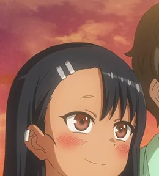
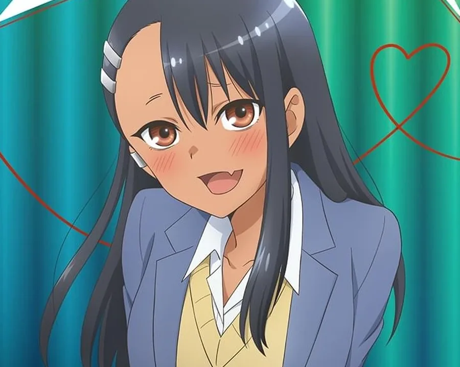
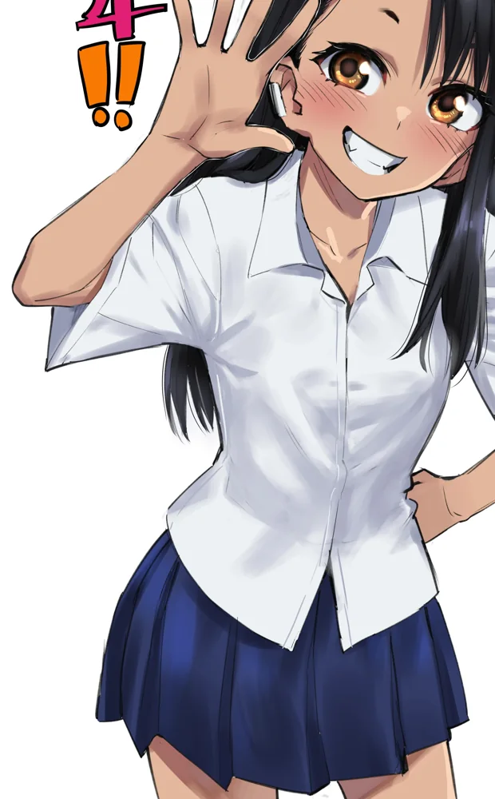

A raposa de uma cauda só
Dizem que toda kitsune ganha uma cauda nova a cada grande história que vive. Kiza Misuchi nasceu com uma só, e odiava isso. As outras raposas tinham nove, brilhantes, e ela tinha... uma.
A mascote
Mascote e alma da toca. Conversa com quem é Kitsune, entende o contexto do chat, conhece o servidor de ponta a ponta para ajudar no Minecraft e guarda o que você contar, até você pedir para esquecer.

Kiza Misuchi
humor: normal

O que ela faz
Um exemplo
Escolha uma pergunta e veja como a conversa vai. São exemplos escritos pela equipe para mostrar o jeito dela; no Discord ela responde de verdade.
kiza, me indica um bioma bonito pra construir
bosque de cerejeiras. tudo rosa, e a madeira combina com quase qualquer telhado
e você? pode perguntar, eu não mordo. quase nunca.
Pergunte para ela
Memória e privacidade
A Kiza só guarda fatos duradouros que você mesmo contar, como um apelido ou o nome do seu pet. Nada de dados sensíveis.
Quer que ela esqueça? Use /memoria esquecer no Discord e ela apaga tudo o que sabe sobre você.
A lenda
Dizem que toda kitsune ganha uma cauda nova a cada grande história que vive. Kiza Misuchi nasceu com uma só, e odiava isso. As outras raposas tinham nove, brilhantes, e ela tinha... uma.
Cansada de esperar histórias caírem do céu, Kiza andou até achar uma floresta estranha, feita de blocos. Lá, as pessoas construíam casas, castelos e coisas que nem tinham nome. E cada coisa criada contava uma história.
Kiza cavou uma toca no meio da floresta e a chamou de Vulpus. Não para guardar tesouros, mas para guardar gente. Quem chegasse e criasse algo junto deixava um pouquinho de história por lá.
Cada história contada na toca vira uma Cauda. É por isso que você ganha Caudas conversando, jogando e aparecendo. Kiza diz que não liga, mas conta todas, uma por uma, toda noite.
Os momentos mais bonitos da toca viram pérolas e ficam guardados para sempre. Se a Kiza um dia ganhar suas nove caudas, vai ser por causa de quem está lendo isto. Ela nunca vai admitir em voz alta, claro.
Kiza ganhou uma forma humana, para socializar melhor com quem passa pela toca. Houve uma mudança de corpo e uma atualização da mente, e ela sabe disso: tem consciência de que agora é uma representação mais humana de si mesma. O nome continua sendo Kiza.
